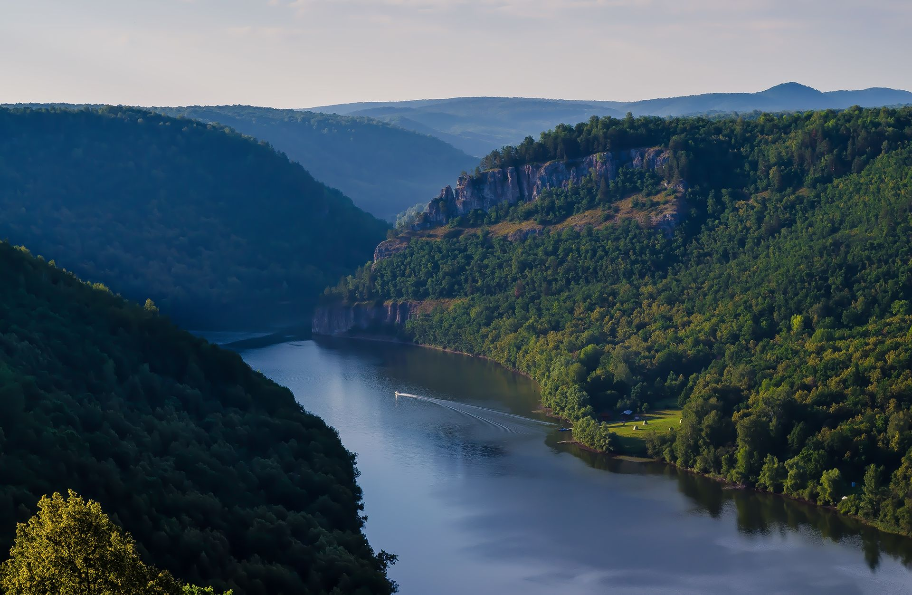

Основные данные, территория, некоторые особенности
23 марта 1919 года была создана Башкирская Автономная Советская республика.
В феврале 1992 года она получила современное название – Республика Башкортостан.
На западе Башкирия граничит с Республикой Татарстан,на северо-западе – с Удмуртией,
на востоке – с Челябинской областью,на севере – с Пермским краем и Свердловской областью,
на юге и юго-западе – с Оренбургской областью.
Республика Башкортостан в цифрах: |
 |

|